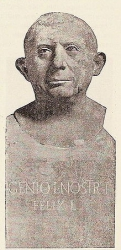

I was joinedby someone from London who
was living
with both her grandfather and her mother.
THE FIRES OF POMPEII -> S
Lucius Caecilius Iucundus
and the girl who got shipwrecked.
THE ROMANS -> A
Nero
granddaughter and her teachers.
MARCO POLO -> A
Marco Polo

visited this man, I was travelling with a female medical student
who loved me, regrettably.
THE SHAKESPEARE CODE -> C
William Shakespeare

a young Scottish lad
who liked arguing and an astrophysicist.
THE MIND ROBBER -> R
Cyrano de Bergerac
family of three who came with me when I got
to see this man, including my future (past?) wife!
THE IMPOSSIBLE ASTRONAUT -> O
Charles II
this man, a nurse came
along who
had gotten married
to the young lady (possibly
pregnant) also with us.
THE CURSE OF THE BLACK SPOT -> F
Henry Avery

this time, but there
was that
mechanic and his
girlfriend who loved me (and whom I...never mind).
THE GIRL IN THE FIREPLACE -> I
Madame de Pompadour

me overheard the man who
is pictured
here conspiring; granddaughter was very ill!
THE REIGN OF TERROR -> N
Napoleon Bonaparte

student who almost got
strangled (by...
well...me) came
with me this time.
THE MARK OF THE RANI -> A
George Stephenson

with me here. (What about her enticed
me so? Who knows.)
THE UNQUIET DEAD -> A
Charles Dickens

save her father
came on this trip.
TOOTH AND CLAW -> T
Queen Victoria
with me when
I saw him
was a computer programmer.
TIME AND THE RANI -> M
Louis Pasteur

who spread her cold, and the stowaway, came along this time.
THE GUNFIGHTERS -> G
Wyatt Earp

dressed in a
ridiculous police uniform
when she decided to join me!
VINCENT AND THE DOCTOR -> N
Vincent Van Gogh

TIMELASH -> M
H.G. Wells

the woman that now forgets she knew
me. What man's
to blame for
that? Me, that's who.
THE UNICORN AND THE WASP -> P
Agatha Christie

people who
came with me
disappeared in a library.
DAY OF THE MOON -> F
Richard Nixon

stargazing grandfather was
the brave
chap who came with.
THE END OF TIME -> I
Barack Obama